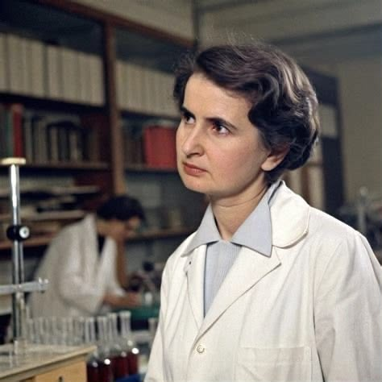

الفصل الأول · 1952–1953
صورة كشفت سرًّا
أكبر منها
روزاليند فرانكلين Rosalind Franklin

في عام 1952، التُقطت صورة لم تكن تشبه الصور التي اعتاد الناس رؤيتها. لم تكن صورة لإنسان أو مكان، بل نمطًا من حيود الأشعة السينية نتج عن دراسة جزيء الحمض النووي.
كان وراء هذه الصورة عمل العالمة البريطانية روزاليند فرانكلين، بالتعاون مع طالب الدكتوراه ريموند جوسلينغ. وعُرفت الصورة لاحقًا باسم «الصورة 51».
في ذلك الوقت، كان العلماء يحاولون فهم البنية الدقيقة للحمض النووي، الجزيء الذي يحمل المعلومات الوراثية. ولم يكن الأمر مجرد لغز نظري؛ فمعرفة البنية ستساعد على فهم كيفية تنظيم المعلومات الوراثية وانتقالها.
امتلكت فرانكلين خبرة واسعة في استخدام الأشعة السينية لدراسة المواد، وكانت بياناتها جزءًا مهمًا من الأدلة التي ساعدت على الوصول إلى النموذج الصحيح.
لكن الصورة لم تكن اكتشافًا كاملًا بمفردها. احتاج فهمها إلى معرفة علمية وتحليل وبيانات أخرى، كما احتاج بناء نموذج الحمض النووي إلى مساهمات عدة باحثين.
في عام 1953، نشر جيمس واتسون وفرانسيس كريك نموذجهما للبنية الحلزونية المزدوجة للحمض النووي. وفي الوقت نفسه، نُشرت أبحاث أخرى تتضمن بيانات الأشعة السينية التي جمعتها فرانكلين وجوسلينغ.
وهنا تبدأ المسألة التي تجعل القصة أكثر تعقيدًا من مجرد صورة وعالمة لم تحصل على جائزة.
فقد اطّلع واتسون على الصورة 51 من خلال موريس ويلكنز دون علم فرانكلين أو موافقتها، بحسب الرواية التاريخية التي تعرضها كلية كينغز لندن. وأثارت هذه الواقعة نقاشًا مستمرًا حول أخلاقيات مشاركة البيانات العلمية، وحدود التعاون، وحق الباحث في معرفة كيفية استخدام عمله.
لكن الإنصاف يقتضي ألّا نحول فرانكلين إلى شخصية لم تفعل سوى التقاط صورة، أو إلى عالمة لم يفهم أحد سواها الحقيقة. فقد امتلكت أبحاثها قيمة مستقلة، وأظهرت كتاباتها أنها كانت تعمل على فهم العلاقة بين البنية الجزيئية والوظيفة البيولوجية.
في عام 1962، مُنحت جائزة نوبل في الطب أو علم وظائف الأعضاء لواتسون وكريك وموريس ويلكنز. كانت فرانكلين قد توفيت عام 1958، وجائزة نوبل لا تُمنح بعد الوفاة.
إذن، لم يكن غياب اسمها عن الجائزة دليلًا وحده على سرقة متعمدة، لكن قصتها تظل سؤالًا مهمًا عن الطريقة التي تُروى بها الاكتشافات العلمية، وعن المسافة بين قيمة المساهمة ومدى حضور صاحبها في الذاكرة العامة.
فالصورة لم تكن الحقيقة كلها، لكنها كانت دليلًا مهمًا فيها. وربما كانت المشكلة الأكبر في أن الحكاية التي حفظها كثيرون لم تمنح كل الأدلة وكل أصحابها المساحة نفسها.
من قلب الحكايةالصورة لم تكن الحقيقة كلها، لكنها كانت دليلًا مهمًا فيها.